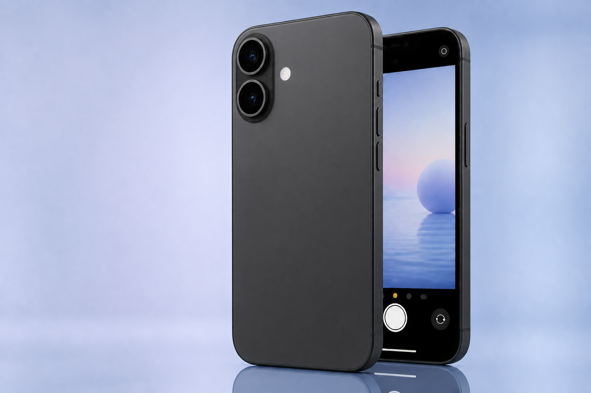
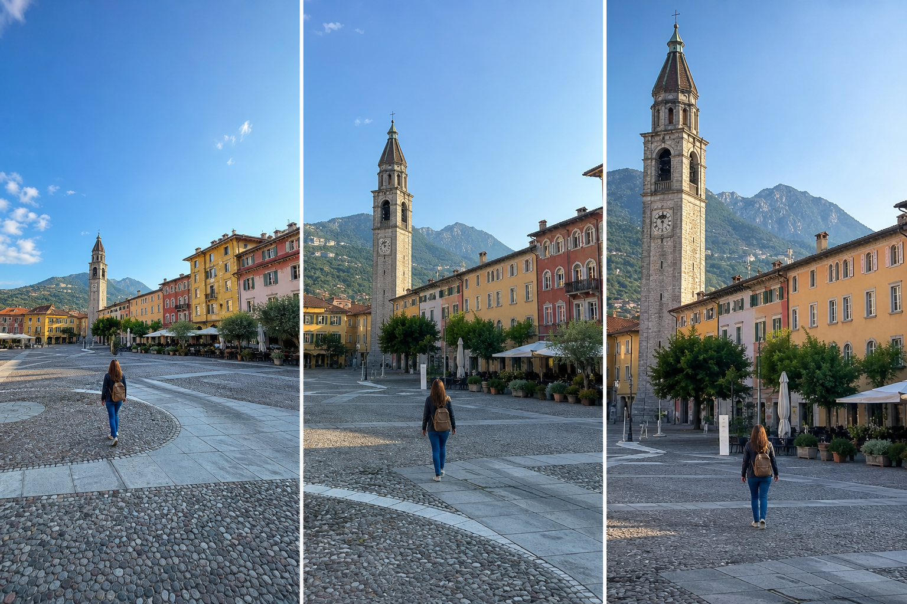
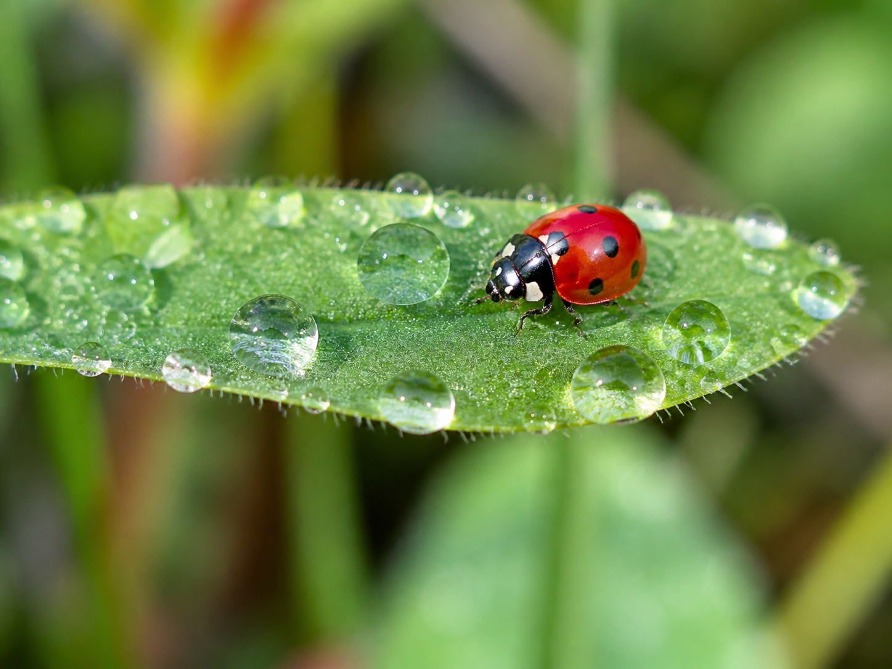
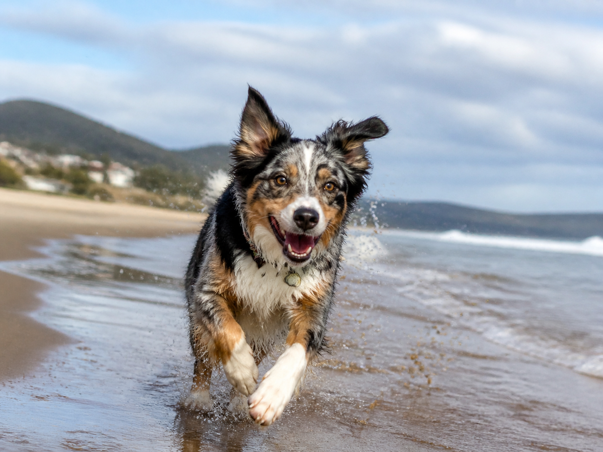
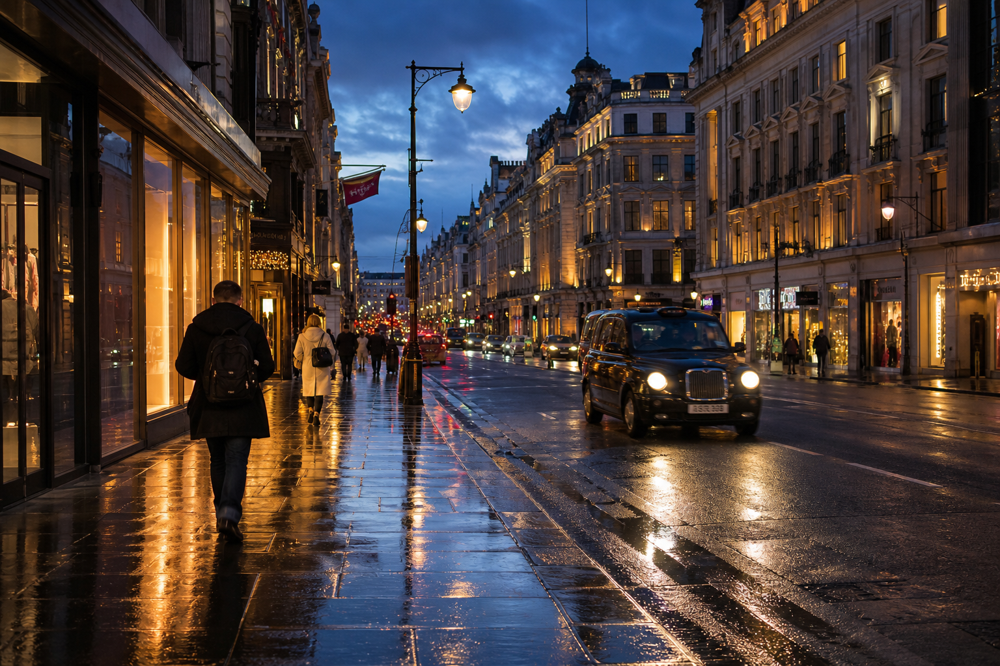
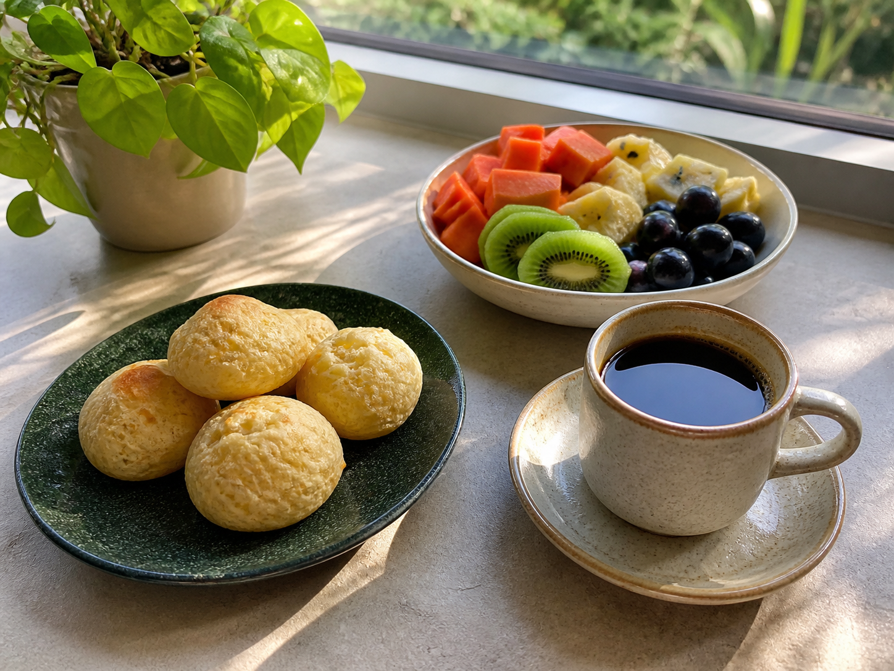
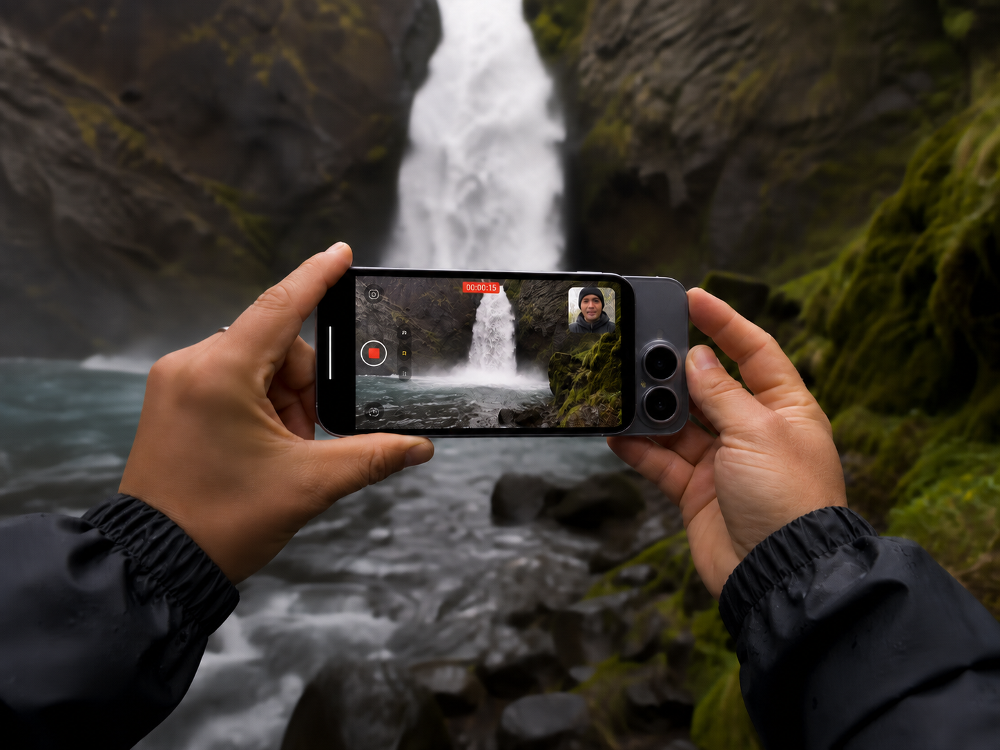

Limpe as lentes
Uma camiseta macia já remove gordura. Luzes “embaçadas” quase sempre são lente suja.
Um manual visual para escolher a lente certa, acertar foco e luz e registrar cada momento — mesmo sem internet.

Uma camiseta macia já remove gordura. Luzes “embaçadas” quase sempre são lente suja.
É a opção mais equilibrada. Use 0,5x para caber mais e 2x para aproximar sem chegar perto.
Toque no rosto, animal ou objeto principal. O quadrado amarelo confirma foco e exposição.
Ao lado do foco, arraste o pequeno sol para baixo se o céu estiver branco; para cima se estiver escuro.
Apoie os cotovelos, prenda a respiração por um instante e toque suavemente no disparador.

Paisagens, interiores apertados, prédios e grupos.
Evite rostos nas bordas: eles podem ficar esticados.A melhor escolha geral, principalmente com pouca luz.
Dê dois passos para ajustar a composição antes de usar zoom.Retratos, detalhes, comida e assuntos mais distantes.
É um recorte de alta qualidade da câmera principal; precisa de um pouco mais de luz.




Melhor padrão para viagens, família e redes sociais.
Para caminhar ou correr filmando. Precisa de boa luz e chega a 2,8K/60.
Desfoca o fundo e troca o foco. Use 4K/30 em cenas planejadas.
Ótima para água, esporte e animais: 1080p em 120 ou 240 qps.
Em Vídeo, abra os controles e ative o ícone com duas pessoas/câmeras.
Toque no botão branco ao lado do vermelho sem interromper a gravação.
Ajuda a deixar horizontes retos e a usar a regra dos terços.
Excelente detalhe com arquivos menores. Use 48 MP em paisagens com muita luz e quando quiser recortar depois.
Segure o botão para registrar ação rápida sem perder o melhor instante.
Faça a câmera lembrar modo, exposição, Live Photo e outros controles que você prefere.
Economiza espaço e permite editar depois os Estilos Fotográficos de última geração.
Retrato depois: fotos de pessoas, cães e gatos podem guardar profundidade; toque em Retrato na edição para desfocar o fundo.
Live Photo: em Editar, escolha outro quadro-chave quando alguém piscou. Também há efeitos Loop, Vai e Volta e Longa Exposição.
Limpe a lente, volte ao 1x, toque no assunto e apoie o telefone. À noite, espere o contador terminar.
Saia do 0,5x, use 1x ou 2x e mantenha a pessoa longe das bordas. Não fotografe muito perto do rosto.
Toque no céu claro e arraste o sol para baixo. Se o rosto escurecer demais, procure uma sombra iluminada.
Use 2x, apoie o iPhone, toque na lua e abaixe bastante o sol. A lente normal não entrega o mesmo detalhe de uma teleobjetiva longa; inclua prédios ou árvores na composição.
Você provavelmente passou do 2x. Aproxime-se fisicamente, fotografe em 2x com boa luz ou faça a imagem em 1x/48 MP e recorte depois.
No Safari, toque em Compartilhar, depois em Adicionar à Tela de Início e confirme em Adicionar. Abra uma vez conectado para salvar todo o manual.
Conteúdo elaborado a partir das especificações e do Guia do Usuário oficiais da Apple. As imagens são demonstrações fotográficas realistas criadas para ensino. Este é um guia independente, não afiliado à Apple.